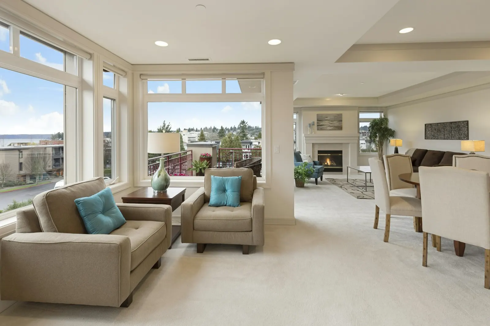
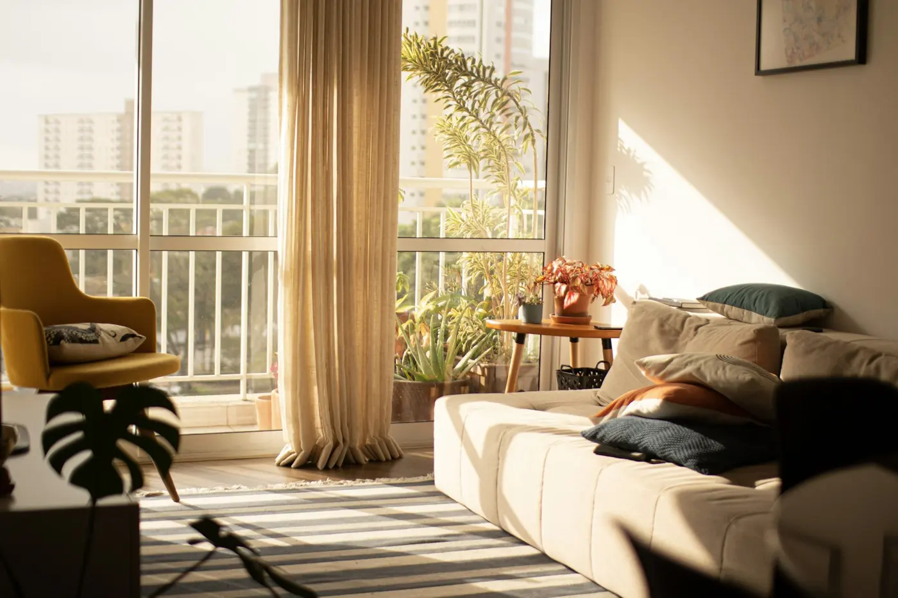
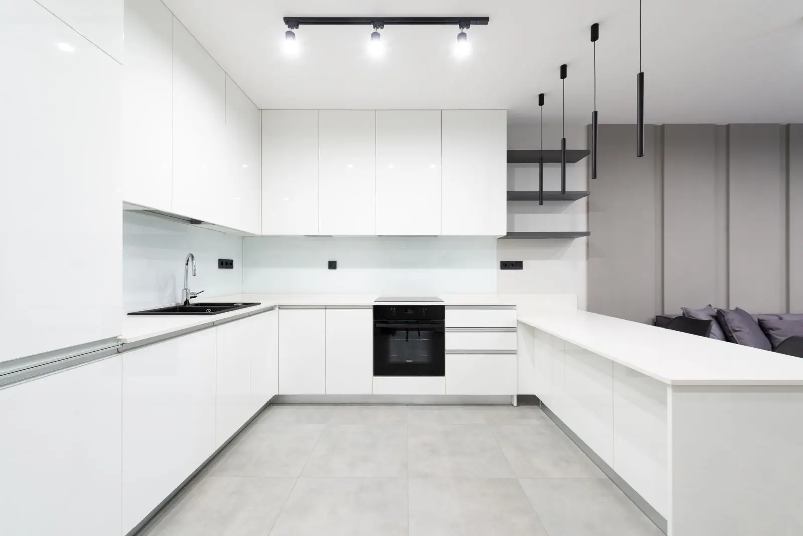
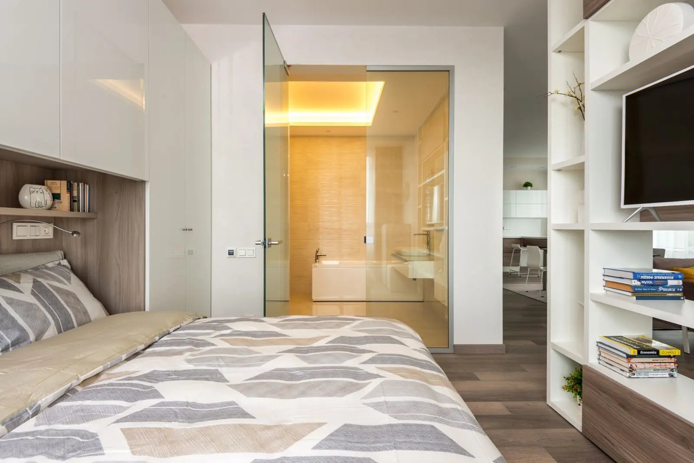
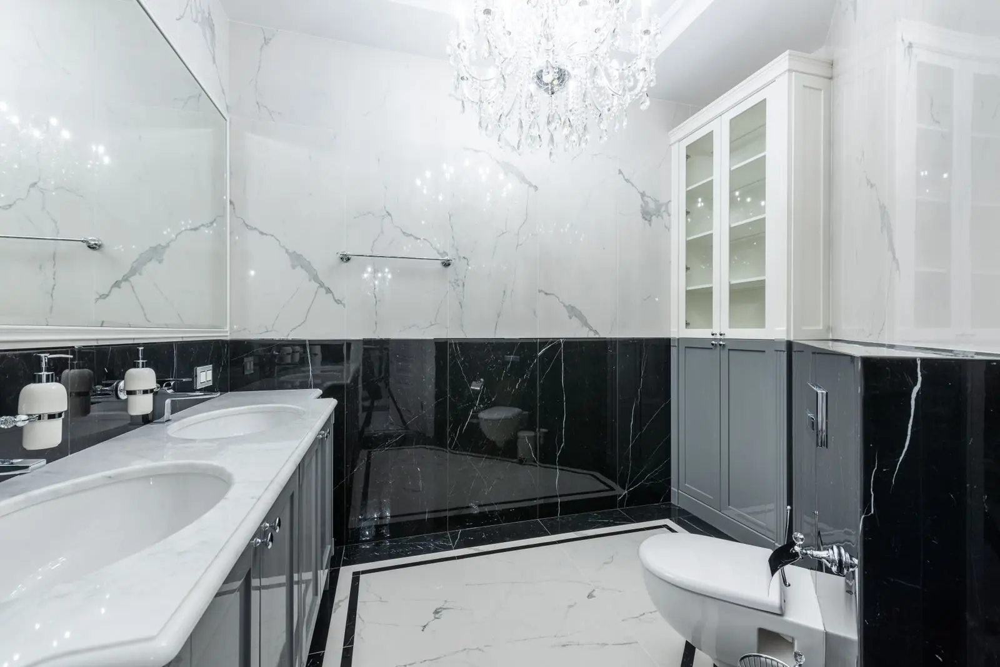
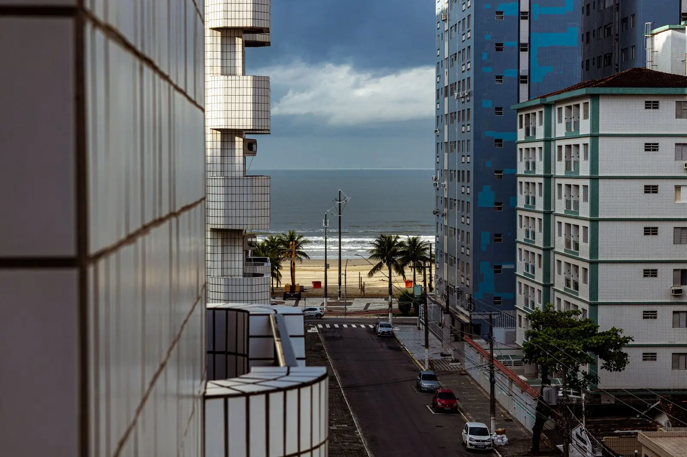

Apartamento 3 suítes de frente para a baíaBeira-Mar Norte.
Andar alto na Beira-Mar Norte, varanda de ponta a ponta e a ponte no horizonte.
- Disponível
- AR-1012
- 168 m²
- 3 quartos · 3 suítes
- 3 vagas
- R$ 2.980.000






01 / 07 Sala de estar e jantar
VÍDEO, TOUR E PLANTA
Conheça antes de ir.
Vídeo de apresentação, 14 segundos. Demonstração montada com as fotos do anúncio: no site real, entra o vídeo filmado no imóvel (com drone, quando tiver).
Arraste para olhar em volta · use dois dedos ou a roda do mouse para aproximar
Suíte com vista para a baía. Tour 360° de demonstração com foto panorâmica livre: no site real, entra o tour feito no próprio imóvel (Matterport, Kuula ou foto 360° da sua câmera).
Planta ilustrativa, com medidas aproximadas e sem escala oficial. Toque para ampliar; na tela cheia, aproxime com dois dedos ou com dois toques.
O imóvel, por dentro.
Apartamento de 168 m² no 14º andar, com a varanda gourmet acompanhando toda a sala. Da varanda se vê a baía norte, a ponte Hercílio Luz e o pôr do sol no continente.
Três suítes, a principal com closet e banheiro com duas cubas. Cozinha integrada, área de serviço separada e dependência.
Prédio com piscina, academia, salão de festas e portaria 24 horas, a uma quadra da pista de caminhada da Beira-Mar.
- Vista permanente para a baía
- Varanda gourmet
- Três vagas e depósito
- Portaria 24 horas
Ficha técnica
- Código
- AR-1012
- Tipo
- Apartamento
- Área privativa
- 168 m²
- Quartos
- 3 suítes
- Banheiros
- 4
- Vagas de garagem
- 3
- Posição
- 14º andar
- Ano de construção
- 2018
- Condomínio
- R$ 2.200 por mês
- IPTU
- R$ 8.600 por ano
- Preço por m²
- R$ 17.740
O que tem perto
- Pista da Beira-Mar100 m
- Supermercado400 m
- Shopping Beiramar1,6 km
- Hospital1,2 km
- Centro3 km
- Aeroporto14 km